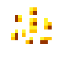

Table of content
Basics
Items
Blocks
Plant Types
Other Plants
↑
Basics
Home
Getting Started
Plants
Getting Seeds and Resources
Crafting Recipes
Configuring the Mod
Plant Requests
Enhancers
Items
Mineral Rock
Dense Mineral Rock
Mineral Crystal
Mineral Hoe
Seeds
Shards
Bulbs
Blocks
Mineral Soil
Mineral Stone
Organic Ore
Plant Types
Crystalline Plants
Metallic Plants
Biochemical Plants
Other Plants
Mystical Seed Pod
↑
Seeds
Resynth seeds are used to plant the various types
of Resynth plants. They're obtained differently
depending on the plant type the seeds are for.
See
Getting Seeds and Resources
for a detailed guide on getting seeds.
All Resynth seeds can only be planted on Mineral Soil blocks.
All Resynth seeds can only be planted on Mineral Soil blocks.
Resynth Seeds

Texture for Blaze Seeds.
Display Name:
Seeds
Stackable:
Yes(64)
Added in:
1.0.0 Beta
Plant on:
Mineral Soil
Texture and Colour
The different Resynth seeds have different textures
depending on the type of plant they place and all
the seeds have a different colour that matches the
colour of the resource they grow.

Planting Resynth Seeds.
Planting Resynth Seeds.
Tooltips
In version
This information will include the growth chance of the plant, the chance the seeds will drop from the ore/mob and the chance seeds will drop from the produce. Biochemical seeds will also display the chance the seeds will drop when breaking a Mystical Seed Pod.
1.3.3, all seeds have a tooltip
that displays information about the plant type they grow.
This information will include the growth chance of the plant, the chance the seeds will drop from the ore/mob and the chance seeds will drop from the produce. Biochemical seeds will also display the chance the seeds will drop when breaking a Mystical Seed Pod.